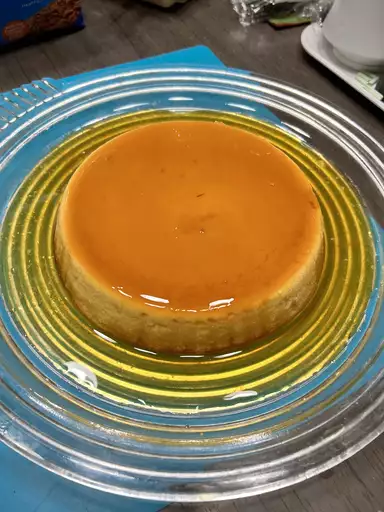

Flan Recipe

Description
"Flan" can refer to a couple different things depending on where you live.
In this case, it's a baked custard dessert topped with caramel.
The Spanish dessert is similar to the French crème caramel.
Ingredients
- Sugar for caramel - 1/2 cup (100 g)
- Sugar for flan - 1/2 cup (100 g)
- Eggs - 5
- Vanilla - 1/2 Tbsp.
- Milk - 2 cups (500 mL), warm
- Dulce de leche or whipped cream - as needed
Steps
-
For the Caramel: In a skillet, add a little of the sugar.
As the sugar starts to melt, stir with a wooden spoon.
Add a little more sugar, and continue to stir.
Add the rest of the sugar, and keep stirring until all the sugar has melted and
turned brown. Immediately pour the caramel into a bundt pan (about 22 cm in diameter),
and carefully rotate the pan as the caramel cools.
Make sure the whole bottom surface is covered;
you may need to use the spoon to spread the caramel.
(Tip: Be extremely careful; the hot caramel will make the bundt pan very hot.
Handle with caution.) Set aside to let cool.
-
For the Flan: Add the remaining sugar and the vanilla to the center of a large bowl.
Warm the milk, and then add it to sugar. Stir well.
Add the eggs and stir gently with a whisk;
the eggs do not need to be beaten completely (see the photo above).
-
Pour the mixture into the caramelized bundt pan, and cover with foil.
Place this in a pan and fill with hot water until half the mold is covered with water.
Place the water bath in the oven, and bake at 320°F (160°C) for one hour.
After one hour, check the flan to make sure that it has set;
if not, cook it a little longer.
-
Let the flan cool in the refrigerator for at least 3 hours.
When ready, loosen the edges with a knife and flip onto a plate.
Make sure the plate has a lip to catch the caramel.
-
Serve chilled with dulce de leche or whipped cream. Enjoy!